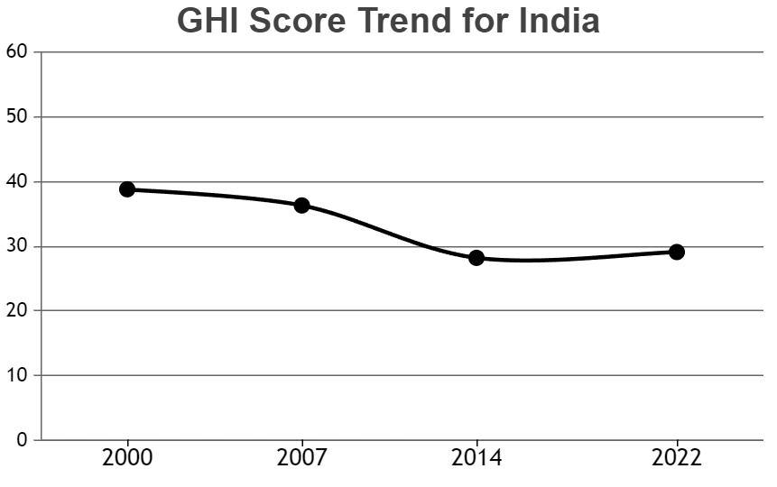

A United Nations report reveals that the world is moving further away from its goal of ending hunger, food insecurity, and malnutrition in all its forms by 2030 shows that the number of people affected by hunger worldwide rose to as many as 828 million in 2021. This represents an increase of approximately 46 million since 2020 and 150 million since the outbreak of the COVID-19 pandemic.
According to the Food Waste Index 2021, 931 million tons of food have been wasted worldwide, with 61% coming from households, 26% from food services, and 13% from retail. China wastes the most food, 64 kilograms per person per year, or 91,646,213 tons. The United States wastes 59 kilograms per person per year, or 19,359,951 tons, while Indians waste 50 kilograms per person per year or 68,760,163 tons.
INDIAIndian households rank second-highest for food wastage in the world. Are you surprised? But we can admit that most of us do not think twice before wasting food. Where on one hand, the homeless toil for one meal a day, we waste food if that does not suit our taste. According to a new survey, Indian households accounted for 7.4% of the entire 931 million tonnes of food wasted in the world in the world. While one household wasted 74kg of food each year globally, in India, the household food waste estimate is 50 kg per capita per year, or 68,760,163 tonnes a year. This much food is enough to feed a small country like Guinea.
74% Of Consumer-Level Food Wasted Every Year In Households On a global per capita-level, about 74% of consumer-level food is wasted each year in households. These figures are extremely alarming and food waste has substantial environmental and economic impacts. if we want to tackle climate change, biodiversity loss, and pollution, we must do our part to reduce food waste.
Global Hunger Index
In the 2022 Global Hunger Index, India ranks 107th out of the 121 countries with sufficient data to calculate 2022 GHI scores. With a score of 29.1, India has a level of hunger that is serious.
Trend For Indicator Values- In India